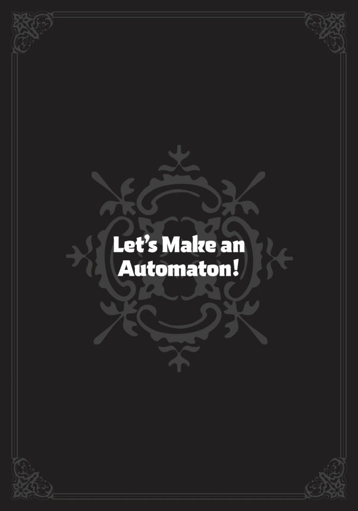
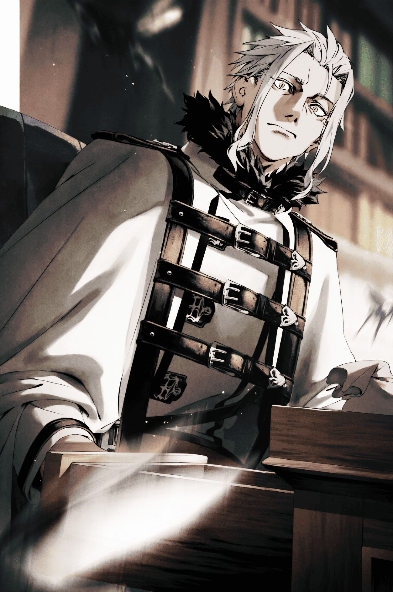

Uyandığımda capcanlı, güzel bir sabaha gözlerimi açtım. Eskiden, bu an beni en çok korkutan şeydi. Eğer uykumda öldürülürsem, yattığım yerde değil, karanlık bir ormanın ortasında uyanırdım. Güvenli bir yer bulamadıkça da uyumaktan korkardım. Öte yandan, bazen de yeterince uyuyamadığım için dikkatimi toplayamayıp ölüyordum; gerçi uyurken bile tetikte kalmayı öğrendiğimden bu sonradan o kadar sorun olmadı…
Neyse, o zamanlar asla böyle bir yerde yaşayıp uyuyacağımı hayal edemezdim.
Nefesime odaklanarak ofisime doğru yöneldim. Masada dağ gibi birikmiş kâğıtlar vardı. Bunlarda, bu döngüyle “normal” kabul ettiğim döngü arasındaki farklı noktaları kaydediyordum. “Temeller” ve “sapmalar” şeklinde not aldığım şeylerdi bunlar.
“Temeller,” benim hiçbir şey yapmadığımda tarihin nasıl ilerlediğini gösteriyordu. “Sapmalar” ise benim müdahalemle ortaya çıkan olaylar ve değişen sonuçlardı. Bütün bunları, İnsan-Tanrı’yı alt etmek için kaydediyordum. Bunun için de mümkün olduğunca az mana harcamam gerekiyordu. Özellikle de 80 yıl sonraki İkinci Laplace Savaşı kritik bir noktaydı. O savaşta mana kullanımımı en aza indirmem, İnsan-Tanrı’nın devrilmesine yol açacaktı. Bu yüzden tarihi istediğim gibi yönlendirmeli ve manayı korumak için her yolu denemeliydim. Tabii bir sonraki döngüye bu belgeleri yanımda götüremeyeceğimden, döngü bitmeden hemen önce yaptığım her şeyi belgeliyor, sonra da defalarca okuyup ezberlemeye çalışıyordum.
Ama bu sefer işler farklı. Bu defa, Rudeus Greyrat da burada. Her hareketi, her etkileşimi dünyayı değiştiriyor. Başta sadece sapma noktalarını yazmayı planlamıştım ama bir noktada bu kayıtlar, onun hakkında tuttuğum günlük gibi oldu. Adı neredeyse her sayfada geçiyor; o kadar çok şey yaşanıyor ki yetişemiyorum. Döngü bitene kadar kaydetmeyi sürdüreceğim ama pek çok şey gözümden kaçabilir. Aslında bunu yapmanın pek bir anlamı olduğunu düşünmüyorum. Bu döngüde garip bir şeyler var gibi, sanki özel bir şey olacak.
Ayrıca, Rudeus’un bir sonraki döngüde olma ihtimali düşük. Bütün bu kaydettiklerim belki de boşa gidecek. Belki de bu, İnsan-Tanrı’yı yenmem gereken döngü. Belki benim kaderim bu.
Güçlerimi toparlayacak, gelecekteki zaman için manamı saklayacak ve Laplace’ı mümkün olduğunca az mana kullanarak alt edecektim. Sonrasında da tüm manamı İnsan-Tanrı’yla yapacağım son savaşa saklayacaktım. Planım buydu.
Yine de kayıt tutmanın zararı yoktu. Bu döngüde yenilirsem ve Rudeus bir sonraki döngüde yer alırsa, bu bilgiler kesinlikle zafer yolunda bana bir silah olacaktı. Ama onları Rudeus’a gösteremezdim. Onu biliyorum; okusa, mutlaka tuhaf bir şekilde yanlış yorumlardı.
O günkü işime başladım. Önce, gece gelen bilgi aktarım tabletinden aldığım bilgilere baktım. Bu tablet, bilgi toplama işini çok kolaylaştırmıştı. Önceki döngülerde ne zaman bir şey değiştirmeye kalksam, sonucun ne olduğunu bizzat görmek için o yere gitmem gerekirdi. Buna alışkındım ama üzerimde taşıdığım lanet yüzünden çok zorlu bir işti. Şimdiyse yerimden kalkmadan bol bol bilgi edinebiliyordum—tek bir değişikliğin sonucunu görmek için birkaç döngü harcadığım zamanlardan eser kalmamıştı.
Öte yandan, Rudeus olmasaydı bu kadar geniş bir bilgi ağına da ihtiyaç duymazdım. Yalnız olsaydım, işler asla bu kadar değişmezdi. O kadar şey değişti ki, bir sonraki adımımın ne olacağı hakkında hiçbir fikrim yok.
Bir de onun yarattığı otomatonla ne yapacağımı hiç bilemiyordum. “Ann.” adını verdiği o kuklayı gördüm. İnsan ellerinin böyle bir şey üretebileceğini aklım almazdı. Ejderha Kralı Perugius da şaşırdı. Kendi ruh hizmetkârlarından bile daha insansı olduğunu söyledi. Sadece tahminde bulunuyorum ama sanırım bu, Çılgın Ejderha Kralı Chaos’un hayalini kurduğu şeydi. Chaos çoktan ölmüş gitmiş olsa da eğer yaşıyor olsaydı, muhtemelen bu kuklayı onlarla birlikte yapardı.
Bir sonraki döngü olursa, belki Chaos’tan o kutsal emaneti geri alma işini biraz erteleyebilirim.
“Hmm.”
Bunu düşünürken, iletişim tabletine göz attım ve ilginç bir habere rastladım. Ariel’den gelmişti: Isolde ve Dohga evlenmiş. Bildiğim kadarıyla bu ikisi daha önce hiçbir döngüde evlenmemişti. Isolde’nin evlenme ihtimali zaten yok denecek kadar azdı—hele çocuk sahibi olması neredeyse imkânsız gibi bir şeydi! Bu da kesin Rudeus’un işe karışmasının bir sonucu olmalı. Bunu yeniden yaşatmak için ne yapmam gerektiğini düşündüm ama aklıma bir cevap gelmedi.
Bunu tekrar yaratma çabası, ancak onların çocuğunun nasıl biri olduğunu ve dünyadaki rolünü gördükten sonra gündeme gelebilir. Olanlara göre, bir sonraki döngüde o çocuğun doğmasını engelleyebilirim de.
Rudeus’un buna karşı çıkacağını tahmin ediyorum; Ama yapacak bir şey yok. Ona artık yalan söylemek ya da onu kandırmak istemiyorum, bir sonraki döngüye gitsem ve her şeyi unutsa bile.
***
“Günaydın!”
Ben kâğıtlarımı düzenlemekle uğraşırken Rudeus çıkageldi.
“Hm,” diye cevap verdim.
“Bugün de evrak işleri ha? Vay be, çok disiplinlisin, Ejderha Tanrısı Orsted!”
“Ben hep bunu yaparım.”
“Hep bir şeylerle meşgul olmak önemli tabii! Hayat uzun sonuçta! Ağır ağır, sindire sindire! Sen bilirsin bu işleri, Ejderha Tanrısı Orsted!”
Rudeus bazen böyle tuhaf hallere giriyordu. Normalde daha sakindir ama ruh hâlinde belli bir mantık var. Mesela böyle coştuğunda, başına iyi bir şey geldiği belli olur. Öte yandan, sessiz ve mahcup görünüyorsa, söylemek istemediği bir şey var demektir. Onu anlamak gayet kolay.
“Ne oldu?” diye sordum.
“Senden hiçbir şey saklanamıyor, CEO! Eheh, şey, hani Lara var ya? Bugün ‘Baba’yla bütün gün birlikte olmak istiyorum!’ dedi. Hehe. Chris zaten bana çok düşkün ama Lara’dan bunu duyacağımı hiç beklemiyordum. Biraz gururumu okşadı açıkçası.”
“Onu da getirdin mi?”
“Getirdim. Lara’yla Sieg’i Leo’nun sırtına bindirdim.”
“Sieg de mi? Bu biraz beklenmedik bir durumdu. Sanırım yüz ifademe yansıdı ki Rudeus’un suratı bir anda ciddileşti.
“Şey… Yani Sieg, Alec’e çok hayran olduğunu söylüyor! Geçenlerde olanlar sırasında Alec, Biheiril Krallığı’yla ilgili bir şeyler anlatmış galiba. ‘Kuzey Tanrısı’ burada olacaksa, yine gelir o hikâyeyi dinlerim dedi. Şu anda Alec’le beraber.”
“Anladım.”
“Ya, şey, çocuğumu işe getirmesem miydim acaba…”
“Benim için sorun olmaz.”
Rudeus’un ailesi onun zayıf noktasıydı. Onlar onun için çok önemliydi—yaşama sebebiydi. Onlar için her şeyi yapardı. Onlara zarar veren herkesi de gözü kapalı düşman belliyordu. Ne sonuç doğuracağını umursamadan saldırıya geçerdi. Maalesef, kaybedeceği belli olursa, nefes alıp vermek kadar doğal bir şekilde taraf değiştirirdi. Karşısındaki kişi İnsan-Tanrı bile olsa, onları korumak için başını eğer, tüm gururunu hiçe sayardı.
Benzer insanları çok gördüm. Rudeus’u müttefik olarak tutmak için ailesine özenli davranmak zorundaydım. En azından onlara kötü davranmaktan kaçınmam gerekiyordu. Onları gözümün önünden ayırmıyor, elimden geldiğince koruyordum. Rudeus’un en değer verdiği şeyi muhafaza ettiğim sürece beni satmayacağını biliyordum. Sonuçta, İnsan-Tanrı ona aynı güvenceleri pek veremezdi.
Tüm bu hesapların ötesinde, üzerimdeki lanetin Rudeus’un çocuklarını etkilemediğini fark etmiştim ve o ufaklıklara karşı içten içe bir sevgi besliyordum. Biraz canlılık hiç de fena gelmiyordu. Hatta kendimi neredeyse normal biri gibi hissetmemi sağlıyordu.
“Çocukların harika,” diyerek gülümsemeye çalıştım. Onun çocuklarına iltifat ettiğimi düşünüyordum ama Rudeus’un ifadesi bir anda ciddileşti. “Kahretsin,” içimden geçirdim, galiba onu tedirgin ettim. Bu adam bir dakika önce sıradan bir şekilde sırıtıyor, sonraki dakikada akıl almaz bir planı uygulamaya koyabiliyordu. Bana muhtemelen zarar veremezdi ama garantisi de yoktu—kimbilir, ansızın uykumda toprağa gömülüversem şaşırmazdım. Şu anda onu alt etmek kolay olurdu ama beni savunmasız yakalarsa…
“Kızlarımı kimseye vermem, Bay Ejderha Tanrısı Orsted, sana bile.”
“Demek istediğim o değildi.”
Rudeus eski sakin haline döndü. “İkisini de sonra getirip sana ‘merhaba’ dedirteceğim.”
“Bana uyar, şart değil. Öyle resmiyete falan gerek yok.”
“Tamam. Zaten Lara bazen biraz kaba olabiliyor, en iyisi böyle.” dedi ve sonra koltuğa oturdu.
“Pekâlâ, yine yoğun bir güne başlayalım! Bugün ne yapsak dersin? Büyülü Zırh Versiyon Bir’le bir prova dövüşü mü yapsak, yoksa laneti bastıran kaskı mı kalibre etsek? Versiyon üç üzerinde yaptığım geliştirmeleri ya da versiyon sıfırdaki ayarlamaları anlatabilirim. Belki sonrasına dair planlarımızı görüşürüz…”
Öne sürdüğü her şeyin baş kahramanı kendisi olacaktı. Muhtemelen kızının ve oğlunun gözü önünde havalı görünmek istiyordu. Ama ben az önce kâğıtları düzenlerken aklıma ufak bir şey gelmişti. Çok büyük bir mesele değil ama Laplace’la savaşacaksak yapılmasında fayda vardı.
“O konuda…”
Bu sene, Orta Kıta’nın güney tarafındaki bir ülkede inatçı bir kuraklık yüzünden kıtlık baş gösterecekti. Sayısız aile açlıktan ölecekti. Kaderin doğasında var olan bir şeydi bu. Beni ilgilendiren şey ise o ailelerden sadece biriydi. Ailenin pek bir özelliği yoktu, en küçük oğulları hariç. İleride yetenekli bir komutan olacaktı. İkinci Laplace Savaşı’nda Eastport’u savunmak için orduları kumanda edecekti. Bu olağanüstü liderlik yeteneği sayesinde Kral Ejderha Krallığı ordusunun uzun süre direnmesini sağlayacaktı. Normalde, Laplace’la olan savaşa gitmesini önleyecek şekilde hareket ederdim ve kalan manamı korumak için o çocuğu kendi hâline bırakırdım. Ama bu sefer Laplace’la savaş olacaktı ve yanımda Rudeus vardı. Zaman varken gidip ailesini kurtarmak daha iyiydi.
“Durum bu,” diyerek bitirdim anlatmamı. Rudeus hayal kırıklığına uğramış gibi baktı.
“Lara’ya işimin nasıl bir şey olduğunu gösteremeyeceğim, çünkü iş gezisine çıkmamız gerekecek…”
“İstersen yarına kadar bekleyebilir,” dedim.
Rudeus başını salladı. “Hayır. Eğer bu ailenin tam olarak hangi gün açlıktan öleceğini hatırlamıyorsan, ertelememeliyiz. Muhtemelen geç kalmayız ama insanlar çok narin—ne zaman düşüp öleceklerini bilemezsin. Her ihtimale karşı hep seyahat malzemesi hazır tutarım. Hemen çıkabilirim.”
“Eğer senin için de uygunsa,” dedim, sonunda ikna olarak.
“Tamam, ben hazırlıkları şimdi yaparım.” deyip Rudeus, ofisin depo kısmında tuttuğu ekipmanları almak için odadan fırladı. Yaklaşık on beş dakika sonra, sırt çantası, erzak, büyü parşömeni ayar aleti ve daha birçok malzemeyle seyahat kıyafetlerini kuşanmış olarak geri döndü.
Bana dönüp, parmaklarını hızlı bir hareketle alnına götürdü. “Bunu sorduğum için kusura bakma ama, fırsatın olursa çocukları eve götürebilir misin? Leo oradayken güvende olacaklarından eminim ama yine de başlarında biri olsun isterim.”
“Tabii,” dedim. Bunu söylemesine bile gerek yoktu. Rudeus’u sadık tutan sebebi asla göz ardı edemezdim.
“O hâlde ben çıkıyorum,” dedi Rudeus ve doğruca alt kattaki teleportasyon dairelerine yöneldi.
Son birkaç yılda, gerektiğinde çok daha hızlı harekete geçmeyi öğrenmişti ve ona verdiğim görevleri neredeyse her zaman eksiksiz yerine getiriyordu. Önceki döngülerde de takipçilerim, piyonlarım olmuştu. Ama hiçbir zaman, söylediklerimi bu kadar sadakatle ve beceriyle yerine getiren birine rastlamamıştım. Şimdi, İnsan-Tanrı ve müritlerinin nasıl bir ilişki yaşadığını biraz daha iyi anlıyordum. Bu düşünceyle kaşlarımı çattım. Rudeus güvenilirdi, ama ona fazlasıyla bel bağlamak da iyi bir fikir değildi. Sonuçta, İnsan-Tanrı’yı anlamak bile içimde kötü bir his yaratıyordu. Yine de şu an başka pek seçeneğim yok. Rudeus’la olan ittifakım, manamı çarçur etmem için bir sebep değildi. Bu döngüde zaten yeterince harcamıştım.
Şimdilik lanet bastırıcı kaskımı taktım ve çalışma odasından çıktım.
Resepsiyonun oradan geçerken Faliastia bir anda irkildi.
“Ah! CEO, siz miydiniz!” diye cıyakladı. Sanırım onu biraz korkutmuştum. Ama kask sayesinde sadece zıplamakla yetindi. Kaskı takılıyken ve takılı değilken aradaki fark gerçekten çok büyüktü. Yapım yöntemini zaten belgelemiştim. Geliştiremiyor olsam bile tekrar üretebilirdim. Bir sonraki döngüde bunu yine yapacaktım.
“Rudeus Başkan az önce çıktı. Siz de dışarı mı çıkacaksınız, Efendi Orsted? Size eşlik edeyim mi?”
“Gerek yok. Sadece kısa bir işim var, hemen dönerim.”
“Peki efendim.”
Dışarı adım atar atmaz, biraz ilerideki yükselen sesleri duydum.
“İşte o an—şlak!—Vahşi Kılıç Kralı Eris, küçük bir boşluk buldu ve üçüncü Kuzey Tanrısı’nın kolunu kesti!”
Böyle tiyatral bir ses tonuyla konuşan kişi, ofisin arkasındaki gölgede bir köşede duruyordu.
“Üçüncü Kuzey Tanrısı’nın tek kolu gitti. Karşısında Kuzey Tanrısı Kalman II ve İblis Kralı Atofe vardı! Arkasında da Vahşi Kılıç Kralı Eris ve Büyücü Kral Rudeus! Hiçbiri söylediği şeyle ilgilenmiyordu! Lafın bittiği yerdi artık! Savaş bitmişti! Herkes üçüncü Kuzey Tanrısı’nın işinin bittiğini düşündü! Ama sonra, vuşş! Kaçıp Yeryüzü Ejderhası’na daldı!”
Gölgede, kayanın üstünde oturan adam Alexander Rybak’tı, yani Kuzey Tanrısı Kalman III. Önünde yerde oturan küçük çocuk ise Sieghart Saladin Greyrat’tı. Onu en son gördüğümden bu yana epey büyümüş.
Zaman gerçekten su gibi akıp gidiyor.
“Yani üçüncü Kuzey Tanrısı kaçtı. Yaşadığı sürece, sonunda hâlâ kazanma şansı olduğunu biliyordu. Vadiye daldı gitti! O vadinin içine atlayacak tek bir insan bile yoktu orada. Bunu yapabilecek tek kişiler babası Alex veya İblis Kralı Atofe’ydi!”
“Onlar insan değil mi?”
“O ikisi mi? Yoo, onlar ölümsüz iblislerin kanını taşıyan dehşet savaşçılar! Ama üçüncü Kuzey Tanrısı, peşine takılsalar bile onlardan hızlı kaçabileceğini düşünüyordu! Sonra—kabum! Gümbür gümbür bir ses koptu, kocaman bir gölge havada uçtu! Kimdi bu acaba?! İkinci Kuzey Tanrısı mı? Atofe mi? Berserker Kılıç Kralı mı?! Hayır! O, Rudeus Greyrat’tı!”
“Baba!”
Sieg, Alec’in hikâyesine büyülenmiş gibiydi ama ya Lara neredeydi?
Etrafı taradım ve ofis bahçesindeki saman yığınının üstünden bir varlık hissettim. Oraya baktığımda, mavi saçlı küçük bir kızın samanların üzerinde rahatça uyuduğunu gördüm. Yığının tabanında ise devasa beyaz bir canavar dolaşıyor, yukarıya, ona bakıyordu. Lara Greyrat ve kutsal canavar Leo. Kutsal canavar, Lara’yı kurtarıcı olarak kabul etmişti, ama Lara tahmin edilemez bir çocuktu. Rudeus’la birlikte olmak istediğini söyledikten sonra bu rahat tavırları biraz tuhaftı. Ofisin girişinde Rudeus’u bırakmasından bu yana henüz bir saat bile geçmemişti.
Aslında, onun yaramazlıklardan hoşlandığını duyduğumu hatırlıyorum. Belki de babasını, yaptığı muzipliklerin sonuçlarından kaçmanın bir yolu olarak kullanıyordu. Eğer öyleyse, Rudeus için üzülürdüm. Ne de olsa az önce ne kadar mutlu görünüyordu.
“Büyülü zırh zaten ağır hasar almıştı ama Rudeus motoru ateşledi ve tek başına benim peşime düştü! Tek başına! İkimiz de havadaydık, üçüncü Kuzey Tanrısı hareket edemiyordu! Bam, bam! Büyülü zırhın dev yumrukları tekrar tekrar vurdu! Kabuuum! Rudeus ve üçüncü Kuzey Tanrısı, Yeryüzü Ejderhası vadisinin zeminine çakıldı! Toz bulutlarının içinden, sadece bir kolu ve bir bacağı kalmış üçüncü Kuzey Tanrısı yükseldi, ardından çatlamış ve kırılmış büyülü zırhıyla Rudeus! Peşlerinden kimse gelmemişti! Bu, teke tek bir savaştı!”
“Teke tek savaş!” diye tekrarladı Sieg. Alec, Biheiril Krallığı’ndaki savaşı anlatıyordu. Sanırım Lara, onu buraya getirdikten hemen sonra uyuyakalmıştı ve Alec de Sieg’i oyalıyordu.
“Ama Rudeus, üçüncü Kuzey Tanrısı’nı alt edecek kadar güçlü değildi! Yumrukları Kuzey Tanrısı’nı hazırlıksız yakalamıştı ama bu dövüşü bitirmek için yeterli değildi. Kuzey Tanrısı, bunun Rudeus’un sonu olacağını düşündü! Onu dikkatlice izliyordu ama rakibini küçümsedi. Eğer savaşa girerse, büyücü Rudeus’un mesafesini koruyup favori saldırısı Taş Fırlatışı’nı kullanacağını varsaydı. Savaşmaya gönüllü olmayan bir rakibe Kuzey Tanrısı yenilmezdi! Sonra, Rudeus onu şaşırtmıştı! Taş Fırlatışı yaparken ona doğru koştu! Üçüncü Kuzey Tanrısı, Rudeus’u küçümsemiş olabilirdi ama hâlâ birçok savaşta çarpışmış kudretli bir savaşçıydı! Anında taşın yolundan çekildi—ama taş gözlerinin önünde kayboldu! Bu bir aldatmacaydı!”
“Bir aldatmaca! Bir aldatmaca!”
“Şiiiiing! Kuzey Tanrısı kılıcını savurdu! Fakat yeterince uzağa ulaşamadı! Rudeus’un yaptığı aldatmaca yüzünden, geri adım atıp ölümcül bir darbe indirmeyi başaramadı! Hâlâ umut vardı. Tam geriye sıçramak üzereydi ki… ayağı bir anda yerden kesildi! Evet, Rudeus’un hala sakladığı son bir numarası daha vardı—yerçekimini kontrol edebiliyordu! Kuzey Tanrısı’nı yerden azıcık havaya kaldıracak kadar bir büyü kullandı, neredeyse Kral Ejderha Kılıcı Kajakut’unkine denk bir güçle! Sonra—bam! Bir anda, Rudeus’un yumrukları adama çarptı! Bam bam bam bam! Yumruklar durmadan iniyordu! Hepsi art arda! Resmen bir saldırı sağanağıydı! Rudeus’un o müthiş büyülü mekanizması Kuzey Tanrısı’nı paramparça ediyordu! Ka-blam blam blam! Kuzey Tanrısı’nın bilinci kararmaya başladı. Ayağı onu artık taşıyamıyordu. Kral Ejderha Kılıcı, metalik bir sesle elinden düştü. Rudeus kazanmıştı!”
“Yaşasın!” diye bağırdı Sieg, Alec kendi yenilgisini bu keyifli edayla anlattığında.
Bu oldukça iç ısıtan bir sahneydi; ben de Alec’e yaklaşırken “Alexander Rybak.” diye seslendim.
“Aa! Efendi Orsted! Dışarı mı çıkıyorsunuz?”
“Hayır. Rudeus biraz önce gitti.”
“Evet, çocukları bana bıraktı. Uygun bir vakitte onları eve götürmemi, eşlerine de durumu anlatmamı istedi.”
Demek Rudeus çocukları Alec’e emanet etmişti. O halde onlara eşlik etmeme gerek kalmamıştı.
“Peki,” dedim. “Onları sana bırakıyorum.”
“Emredersiniz!” diye karşılık verdi. Ben de başımı sallayarak ofise geri döndüm.
***
Gün batımına az kalmıştı; notlarımın bir kısmını tamamladıktan sonra ofisimden tekrar çıktım. Alec hâlâ çocukları eve götürmemişti. Resepsiyon da boştu; anlaşılan Faliastia mesaisini bitirmişti.
Tam yanlarına döndüğümde Alec hâlâ konuşuyordu, ama anlatıcı tonunu bırakmış, daha çok ders veren bir havaya bürünmüştü. Sieg, kelimelerini can kulağıyla dinliyordu.
“Genelde senin baban, omurgasız bir kaybeden gibi davranıyor. Bence yüreğinde bir korkak yatıyor. Ama öfkelendi mi, ondan daha ürkütücüsü yok.”
“Beni ruhuyla alt etti. Duyduğuma göre, Ejderha Tanrısı Orsted de benzer bir şey yaşamış. Tabii o benim gibi ezilmedi, ama Rudeus’un ruhunu fark etti ve sanırım bu yüzden senin babanı kendine müttefik yaptı. Sence Ejderha Tanrısı Orsted’le benim, senin babana bu kadar hayran olmamızın sebebi nedir?”
“Bilmiyorum.”
“Cevap delikanlı, onun güçlü olması”
“Baba, güçlü mü? Ama her zaman Kızıl Anne’ye yeniliyor.”
“Evet, şey… Onun gücü diğerlerinin biraz farklı.”
Alec’in Rudeus hakkındaki düşüncelerini merak ettiğimden, kenarda oyalanıp dinlemeye devam ettim.
“Babanın koca bir mana havuzu dışında övüneceği pek bir şeyi yok. Savaş aurası kullanamaz, durumları okumakta müthiş değildir, işler planladığı gibi gitmeyince panik yapar. Görüş kabiliyeti de ortalama. İblis Gözünü kullanmasına rağmen benim ve Ejderha Tanrısı Orsted’in biraz altında kalıyor. Üstelik refleksleri de yavaş, gözün gördüklerine bedeni yetişemiyor. Yaşayan canlılara son darbeyi indirmekte de çok zorlanıyor; bu işi pek midesi almıyor. Büyüleri sessizce kullanabilmesi ve büyüleri muazzam bir hızla atabilmesi onu kurtarıyor; ama yine de benim gibi bir kılıç ustasıyla aynı hızda hareket edemiyor. Gerçekte, beni öldürebilecek güçte bir Taş Fırlatışı hazırlayana dek geçen sürede, ben onu üç kez öldürebilirim. Yani ne kadar akıllıca taktikler düşünürse düşünsün, istersek onu durdurabiliyoruz. Hem ben de dünyanın en hızlısı sayılmam; ham hız bakımından zirvedekilerin bir-iki tık altındayım. Baban uzakta durup rakibini büyülerle dikkatlice vurabilir tabii, ama o fırsatı yakalamak her zaman kolay değildir. Bütün şartlara bakınca, baban ‘dövüşçü’ olacak yapıda değil.”
“Baba… zayıf mı…?” Sieg, duyduklarından hoşnutsuz görünüyordu. Zaten hangi çocuk, babası hakkında böyle aşağılayıcı sözler duyunca mutlu olur ki? Hele Rudeus gibi sevgi dolu bir babaya sahipken.
“Hey, öyle surat asma,” dedi Alec. “Henüz bitirmedim. Şimdi, babanın asıl gücü şudur: kendi eksiklerini biliyor. Bu sayede zayıf noktalarını kapatıp güçlü yönlerini öne çıkaracak bir yöntem buldu.”
“Nasıl bir yöntem?”
“Hızını katlayan Büyülü Zırhı yaptı. Böylece benim gibi bir kılıç ustası onu gafil avlasa bile ayakta kalabilir oldu. Artık onu kolay kolay durduramıyoruz. Tabii hâlâ bire birde eşit şartlarda bir dövüş olduğu söylenemez. Avantaj yine kılıçtan yana, ama en azından ‘bizim seviyemize’ girebildi — savaş aurası kullanamayan, sadece büyük mana rezervine sahip bir büyücü olarak. Üstelik kaçmak yerine dikilip savaşmaya başladı. Bazen direkt cepheden saldırıyor, bazen de korkakça arkadan vuruyor. Kimi zaman müttefiklerini yardıma çağırıyor, kimi zaman tek başına mücadele ediyor. Peki sence neden, şartlar ona karşı olsa bile bizimle boy ölçüşebiliyor?”
Sieg başını iki yana salladı.
“Seni ve ailenizi korumak için. O sizi o kadar çok seviyor ki, sizi korumak uğruna canını vermekten çekinmez.”
Bunu duyan Sieg’in gözleri parladı. Heyecandan yumruklarını sıktı, sonra Alec’e gülümseyerek bakıp:
“Baba gerçekten tam bir Çedar Adamı!” dedi.
“Aynen öyle! Çedar Adamı, gerçek bir kahraman!”
Bir anda, anlamadığım bir kelime kullanmaya başladılar. “Çedar Adamı” olmak da ne demekti? Bir insanın ismi miydi acaba? Binlerce yıllık hayatımda böylesine denk gelmemiştim. Belki de Rudeus’un uydurduğu bir şeydi. Sürekli yeni kelimeler türetiyordu zaten. Onu bir dahaki görüşümde soracaktım, aklımın bir kenarına “Çedar Adamı”nı not aldım.
“Bay Kuzey Tanrısı! Ben de Çedar Adamı olmak istiyorum!”
“Olabilirsin. Çok çalışırsan, sen de gerçek bir kahraman olursun. Ben de bunu, bizzat kendisi de gerçek bir kahraman olan babamdan duymuştum. Baban hiç söylemedi mi?”
“Baba asla öyle bir şey demedi.”
“Öyle mi? Büyüyünce kesin anlatır ama.”
“Peki, çok çalışmak nasıl olur?”
“Güçlenerek.”
“Nasıl?”
“Fiziksel antrenman, biraz da kılıç ve büyü çalışarak.”
Alec bunları sanki çok basitmiş gibi sakin sakin açıkladı.
Sonra Sieg, cesaretini toplamış gibi Alec’e bakıp:
“Anladım. Bay Kuzey Tanrısı. Lütfen bana kılıç kullanmayı öğretir misin?” dedi.
“Huh? Ben mi?”
“Öğretmek istemiyor musun?”
“Annen sana Kılıç Tanrısı Stili öğretmiyor mu?”
“Ben Kuzey Tanrısı Stili öğrenmek istiyorum! Babamla Annemi şaşırtacağım!”
“Ama ben… Yani, iyi bir hoca olmayı denedim ama galiba bu iş için doğuştan gelen yeteneği gerek. O kadar beceriksizdim ki, çıraklarım genelde babamdan ders almak isterdi.”
Kuzey Tanrısı Kalman III Alexander Rybak’ın gençliğinden acı hatıraları vardı. Kuzey Tanrısı olduğunda, yirmiden fazla öğrencisi olmuştu. Ancak birkaç yıl içinde hepsi kendi yollarına gitmişti. O günden beri de Alec’in tek bir çırağı olmamıştı.
“Ama dövüşürken çok havalısın. Ben Kuzey Tanrısı Stili öğrenmek istiyorum.”
“Bu konuda başkasına öğretecek kadar bilgim var mı emin değilim…”
Alec’in bocaladığını görürken, aklıma Rudeus geldi. Sürekli “Daha öğrenecek çok şeyim var,” dese de, öğrendiklerini başkalarına aktarmaktan asla çekinmezdi ve herkes de ona minnettar olurdu. Ben de dahil.
“Alexander Rybak,” dedim, “çocuğa kılıç kullanmayı öğreteceksin.”
Alec, şaşkınlıkla kafasını kaldırdı. Beni fark etmemiş gibi davrandı ama bu mümkün değildi.
“Ama Ejderha Tanrısı Orsted, b-ben hâlâ Kuzey Tanrısı olmayı öğreniyorum.”
“Tam da bu yüzden ona öğretmelisin. Tek bir çırağa eğitim verirken, hem Kuzey Tanrısı Stilini hem de kendindeki eksikleri daha iyi anlarsın.”
Normalde tarihin akışında, Kuzey Tanrısı Kalman III Alexander Rybak, Kılıç Tanrısı Gino Britz’e yenildikten sonra tavrını değiştiriyordu. Sonra da hevesini kaybedip sadece tek bir öğrenci alıyordu. O çocuk çok yetenekli sayılmazdı ama Alec onu yetiştirirken kendini de sorgulayıp gerçek bir Kuzey Tanrısına dönüşmüştü. İkinci Laplace Savaşı’na katılan Kuzey Tanrısı Kalman III, gelmiş geçmiş en güçlü Kuzey Tanrısı olarak bilinir. Bu döngüde o çocuk ne durumda, bilmiyorum, ama Alec zaten yenilmiş ve davranışlarını şimdiden değiştirmişti. O yüzden bu süreci öne çekip ona şimdi birini yetiştirmesini söylemek gayet mantıklıydı.
Üstelik Sieg’in de kılıç kullanma konusunda bir yeteneği var. Laplace Faktörü sayesinde yaşıtlarından daha güçlü. Kutsal Çocuk Zanoba kadar aşırı güçlü olmayabilir ama ileride iki elli kılıcı tek elle sallayabilecek hâle gelmesi pekâlâ mümkün. Böylesine sıra dışı bir yeteneğe sahip biri, Kuzey Tanrısı Stiline tam uyacaktır. Yani böylece Sieg de faydalı bir şeyle meşgul olacak.
Bir de şu var: Alec, Rudeus’un tek gücünün manası olduğunu sanıyor ama Rudeus’un bir diğer gücü de, ihtiyacı olduğunda koşa koşa yardıma gelen dostları. O arkadaşları savaş meydanında değil, bambaşka şartlarda kazanıyor. Alec, Rudeus’la teke tek kapışıp yenildiğinden bunu görememiş olabilir. Fakat çocuklarıyla zaman geçirince belki durumu daha net kavrayacaktır. Bu gücü fark ederse ve onu benimserse, olağan tarihteki hâlinden bile daha soylu, daha güçlü bir Kuzey Tanrısına dönüşebilir.
“Rudeus’a bir bahane uydururum,” dedim.
“Peki, Ejderha Tanrısı Orsted sen söylüyorsan yaparım,” dedi Alec, gülümseyip yine Sieg’e döndü. “Tamam Sieg, yarın başlıyoruz. Eğer anneni ve babanı şaşırtmak istiyorsan, bu sırrımız olarak kalacak, anlaştık mı?”
“Anlaştık!” Sieg, gözleri parlayarak Alec’e baktı.
Alec, minik çırağı yüzünden endişelenmek yerine daha çok heyecanlanmış gibiydi. Uzun zamandır ilk kez gerçek kılıç ustalığı eğitimi verecekti ve belli ki ikisi de iyi bir ikili olacaktı. Ama yine de içimde bir soru işareti vardı.
“Alexander Rybak, sana bir şey soracağım.”
“Tabii, Efendi Orsted!”
“Sırtındaki de ne?”
Alec’in sırtı çengelli tohumlarla (çocukların oyun oynarken birbirlerine fırlattıkları, tutturdukları küçük şeyler) doluydu. Küçükler onlara “yolcu” gibi bir isim takıyorlardı.
“Bunlar Lara Hanım’dan yadigâr,” dedi Alec. “Sanırım canı sıkılmış olmalı. Arkadan sessizce yaklaşıp bunları sırtıma yapıştırdı durdu.”
Bende sessizce kabul ettim.
“Çocukların klasik muzırlıkları işte. Sonra temizlerim,” diye güvence verdi Alec.
Ah, evet. Lara’nın yaramazlıkları. Mantıklı.
“Peki, nerede şimdi?” diye sordum.
“Ofise girmedi mi o…?”
Bir an için bodrum kata inip teleportasyon çemberinin üstüne atlamış olabileceğinden endişelendim. Neyse ki etrafta hâlâ varlığını hissedebiliyordum. Ofisten çıkıyordu. Yanında Leo vardı, umursamaz bir ifade takınmıştı. İçeride de Faliastia’nın varlığını sezdim. Muhtemelen Lara’yı üst katta eğlendirmişti.
“Lara Hanım! Efendi Leo! Eve dönme vakti!” diye seslendi Alec.
“Tamam,” diye cevap verdi Lara. Sieg’in elini tuttu, onu Leo’nun sırtına yerleştirdikten sonra kendi de tırmanıp hemen arkasına oturdu, kollarını ona doladı.
“Ben şimdi onları geri götüreyim,” dedi Alec. Önden yürümeye başladı, Leo ise arkasında hafifçe tıngır mıngır ilerliyordu. Tam yanımdan geçerlerken Lara, zafer kazanmış gibi bir gülümsemeyle bana bakıp kısık sesle kıkırdadı. Nedenini hiç anlayamadım.
Onlar gittikten sonra, ofise dönüp resepsiyonda duran Faliastia’yı buldum. Herhâlde Lara’yı aşağıya kadar o indirmişti. Ona artık çıkabileceğini söyledim ve sonra çalışma odama doğru yol aldım.
“Hmm”, işte tam o anda Lara’nın o sinsi gülümsemesinin sebebini çözmüştüm. Her zamanki koltuğumun üzerinde bir sürü dikenli tohum vardı. Fark etmeseydim, koltuğa oturur oturmaz hepsi sırtıma yapışacaktı. Tam bir yaramazlık işi.
Bu dikenleri toparlayıp bir torbaya koyarken hafifçe gülümsemeye başladım. Ama torbayı çekmeceye kaldırmadan önce içime bir huzursuzluk çöktü. Öyle çok güçlü bir his değildi ama zamanında bir suikastçı tarafından zehirlendiğimde hissettiğime benziyordu. Büyülü eşyalar ve Ejderha Aziz dövüş aurasıyla korunmuş olsam da, o zehri hafiften hissetmiştim.
Yine de pek umursamadan çekmeceyi açınca beş tane canlı çekirge aniden fırlayıp üstüme atladı. Meğer bu iki aşamalı bir şakaymış: Önce dikenleri koyarak beni hazırlıksız yakalayacak, sonra esas saldırıyı yapacaktı. Muhtemelen resepsiyon civarında bir yere saklanıp, ofisten çıktığımı görünce içeri sızmış ve yapacaklarını yapmıştı.

Bu, onun zafer dolu bakışını açıklıyordu. Bir an durup düşündüm. Gerçekten, Lara’nın nasıl biri olacağını kestiremiyordum. İnsan-Tanrı’nın ondan neden korktuğunu merak ediyordum.
***
Rudeus birkaç gün sonra döndü. Sadece aileyi kurtarmakla kalmamış, aynı zamanda çevredeki tüm bölgeye yağmur yağdırarak kıtlığı sona erdirmişti. Gerçekten de etkileyici. Onun ayrıntılı raporunu dinledikten sonra Sieg meselesini açtım.
“Sieghart’ın buraya düzenli olarak gelmesini istiyorum.”
“Şey… nedenini sorabilir miyim?” Rudeus, şüpheyle bana baktı.
Bunu nasıl açıklayabileceğimi düşündüm.
“İlgimi çeken bir şey var ve yakından gözlem yapmak istiyorum.”
Rudeus uzun bir süre sessiz kaldı.
“Tehlikeli mi?”
“Hayır.”
“Sokağa çıkma saatini ben belirleyebilir miyim?”
“Tabii.”
“Peki. Eşlerime haber veririm.”
Pek net olmayan açıklamama rağmen Rudeus kabul etmişti. Bana güveniyordu ya da benden kesin bir cevap alamayacağına iyice kanaat getirmişti, bilmiyorum.
“Başka soruların yok mu?” diye sordum.
“Hayır. Sieg’e kimin ne öğreteceğini tahmin edebiliyorum… ama neden benden gizlenmesi gerektiğini pek anlamadım.”
“Ah.”
“Bence bu iyi bir şey. Alec’e, Sieg’e iyi bakmasını söyle.”
Numaramı fark etmişti. Yaklaşımı beni memnun etmişti. Rudeus ve benim birlikte çalışmaya devam etmemiz için birbirimizin düşüncelerini anlamamız bizim için iyiydi. Şeffaflık, aramızda arzu edilen bir durumdu.
“Pekâlâ, ben de artık eve gideyim.”
“Tamam. İyi iş çıkardın.”
Rudeus tam kapıdan çıkarken bir şey aklıma geldi.
“Rudeus.”
“Evet?”
“Çedar Adamı nedir?”
Rudeus, bir an için ağzı açık şekilde bana baktı. Sonra,
“Yüzü peynirden yapılma bir kahraman. Acıkan çocuklar yesin diye yüzünden parçalar koparıyor, kötü adamları tek yumrukta dize getiriyor, öyle bir şey işte.”
dedi.
“Senin geldiğin dünyada böyle bir kahraman mı vardı?”
“Benim dünyamda yüzünde anko fasulyesi ezmesi olan bir ekmek kahramanı vardı ama burada anko diye bir şeyi kimse bilmiyor. Ben de peynire çevirdim. Çocuklara anlatıp uyutuyorum.”
Çedar Adamı, yüzünden parçalar koparıp insanlara veriyordu. Gerçekten kafa karıştırıcı bir şeydi.
“Niye sordun?” diye devam etti Rudeus.
“Sebepsiz. Sadece merak ettim.”
“Peki. Ben gidiyorum o zaman.”
Rudeus giderken onu izledim, sonra çalışma odama döndüm. Masamda hâlâ Lara’nın bıraktığı dikenli tohumların olduğu torba duruyordu. Çekirgeler ise ortalıkta yoktu; muhtemelen dışarı kaçmışlardı. Lara eve varınca kesin muziplikleri için sağlam bir azar işitecekti.
Derin bir iç çektim.
Lara ve Faliastia, Alexander ve Sieg, şimdi de Rudeus ve onun Çedar Adamı. Bu döngü sürprizlerle dolup taşıyordu.